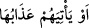

olur. O günden maksad kıyâmettir. Sonraki âyette mülkün ve iki grup arasında hüküm
vermenin Allah’a tahsisi gibi hususlar da bunu göstermektedir. Âyette sanki
“
” buyrulmuş, daha fazla korkutma için sâat (kıyâmet) kelimesinin zamiri
yerine “
” ifadesi konulmuştur. el-İrşâd’da böyle geçmektedir.
Fakir (Bursevî) der ki: “
” kelimesi Kur’an’da bir çok yerde dünyevî azab ile
birlikte zikredilmiştir. Mesela “Allah tarafından kuşatıcı bir felâket gelmesi veya
farkında olmadan kıyâmetin (sâat) ansızın kopması karşısında kendilerini emîn mi
gördüler?” (Yûsuf, 12/107), “Nihayet kendilerine vâdolunan şeyi -ya azabı veya
kıyâmeti (sâat)- gördükleri zaman…” (Meryem, 19/75) ve benzeri âyetlerde olduğu
gibi. Anlaşılan o ki “
” hayır doğurmayan/getirmeyen, Bedir günü ve benzerleri
gibi onlar için kendisinde asla kurtuluş ve sevinç olmayan gündür.
Ölüm zamanı dünya zamanlarının sonu ve âhiret zamanlarının başı olduğu için ölüm
zamanının kıyâmet zamanı ile bitişik olması bakımından aşağıdaki âyette tasarruf ve iki
grup arasında hüküm vermek Allah’a tahsis edilmiştir.
56. O gün, mülk Allah’ındır. İnsanlar arasında hüküm verir. (Bu hüküm gereği)
îmân edip iyi davranışlarda bulunanlar Naîm cennetlerinin içindedirler.
“O gün,” onlara kıyâmetin ve azabın geldiği gün “mülk” padişahlık ve ferman
vericilik, kahredici hükümranlık, tam üstünlük ve mutlak tasarruf, mecâzen ve hakîkaten
asla ortağı olmaksızın tek başına “Allah’ındır.” Yani bugün hükümdarlar ve sultanlar
saltanat ve hükümdarlık dâvâsı güderler. Kıyâmet günü ise cebbarların belindeki
tekebbür ve azamet kemerini çözerler, hükümdarların başındaki taçları kaparlar;
saltanat dâvâları ve devlet ümidleri yok olur. Mülkün gerçek sâhibi olan Allah Teâlâ,
padişahların hayal ve tasavvur mallarını yokluk denizinin dibine atar ve sultanların
tevehhüm ve tefekkür âdetlerini “Bugün mülk/hükümranlık kimindir? (el-Mü’min,
40/16)” sadmesiyle kırar, parçalar. Kimsenin ubûdiyyet göstermek ve aczini ve
çaresizliğini ikrar etmekten başka çaresi yoktur.
Tacının ünü, sadâsı felekleri geçmiş olan baş
Gün gelir O’nun eşiğinde toprak olur
Şeyh Sa‘dî (k.s.) der ki:
Bütün taht ve mülk zevâl bulur, yok olur